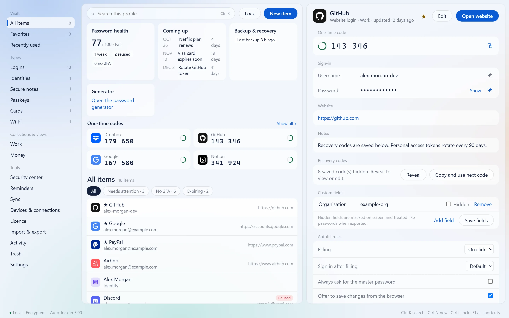

할 수 있는 모든 것, 그리고 그것이 이루어지는 곳
이 모든 것이 내 기기에서 실행됩니다. Windows 앱, 브라우저 확장 프로그램, iPhone 앱이 해당됩니다. Free는 항목을 7개까지 담을 수 있고, Pro는 제한을 없애며 동기화, 2단계 인증 코드, 문서를 더합니다.

보관함
- 디스크에서 암호화됨
- 저장하는 모든 것은 마스터 비밀번호로 보호되는 키로 암호화되며, Argon2id와 AES-256-GCM을 사용합니다. 비밀번호뿐 아니라 이름, 사용자 이름, 웹사이트도 암호화됩니다.
- 비밀번호 이상의 것
- 웹사이트 및 데스크톱 앱 로그인, 패스키, 결제 카드, 은행 계좌, 신원 정보, 보안 메모, 문서, SSH 키, API 키, Wi-Fi 네트워크, 북마크, 소프트웨어 라이선스, 구독, 보증, 구매 내역을 각각 고유한 필드로 저장합니다.
- 문서 (Pro)
- 스캔한 문서 같은 파일을 파일당 최대 25MB까지 보관함에 보관하세요. 각 파일은 고유한 키로 암호화됩니다. 문서를 미리 보거나, 사본을 저장하거나, 다른 앱에서 열 수 있습니다. 동기화하면 파일은 암호화된 상태로 다른 기기에도 전달됩니다.
- 2단계 인증 코드 (Pro)
- 사이트의 설정 키를 저장하면 LocalGateKeys가 로그인 상단과 홈 페이지의 일회용 코드 카드에 현재 코드를 표시합니다. 코드는 TOTP 표준(RFC 6238)을 따릅니다: 6~8자리, 15~120초, SHA-1, SHA-256 또는 SHA-512.
- Apple Watch의 코드(Pro)
- 선택한 2단계 인증 코드를 Apple Watch에 최대 10개까지 표시합니다. 워치에는 코드만 표시되고 비밀번호는 표시되지 않으며, iPhone이 가까이 없어도 계속 작동합니다.
- QR 코드 스캔
- QR 코드 스캔을 선택한 다음, 사이트의 2단계 인증 QR 코드를 Win+Shift+S로 캡처해 붙여 넣거나, 이미지를 끌어다 놓거나, 웹캠에 비추세요. Google Authenticator 내보내기 QR 코드도 사용할 수 있습니다. 이미지는 PC에서 읽으며 저장되지 않습니다.
- 비밀번호 생성기
- 8~256자의 무작위 비밀번호 또는 3~16단어의 암호 문구를 만듭니다.
- 비밀번호 상태
- 저장된 비밀번호 중 어떤 것이 취약하거나, 재사용되었거나, 1년이 넘었거나, 2단계 인증 코드가 없는지 확인하세요. Have I Been Pwned를 이용한 유출 확인은 켜기 전까지 꺼져 있고, 직접 시작할 때만 실행되며, 해시의 다섯 글자만 전송하고 비밀번호는 절대 보내지 않습니다.
- 사이트 로고와 종류 아이콘
- 각 항목에는 사이트의 아이콘, 잘 알려진 사이트의 내장 로고 또는 항목 종류를 나타내는 아이콘이 표시되어 한눈에 알아볼 수 있습니다.
- 검색, 정렬, 컬렉션
- 명령 팔레트(Ctrl+K), 필터 칩, 즐겨찾기, 직접 만든 컬렉션으로 항목을 찾습니다. 목록은 제목, 수정 날짜, 생성 날짜 순으로 정렬할 수 있으며 즐겨찾기를 맨 위에 둘 수 있습니다. 검색창에서 바로 목록의 화살표 키, Enter, Ctrl+C를 사용할 수 있습니다.
- 휴지통과 실행 취소
- 삭제한 항목은 휴지통으로 이동하며, 이를 알리는 메시지에 실행 취소 버튼이 있습니다. 휴지통은 30일 후 자동으로 비워지거나, 직접 비울 때까지 모두 보관됩니다.
- 비밀번호 기록
- 로그인의 비밀번호를 변경하면 이전 비밀번호 최대 10개가 암호화된 기록에 1년간 보관됩니다. 복사하거나 복원할 수 있습니다.
- 확인된 사이트
- 브라우저 확장 프로그램은 저장된 사이트를 "확인된 사이트"로 표시하고, 글자 하나를 바꾼 것처럼 비슷한 주소에서 로그인하거나 저장하기 전에 경고합니다. 이 검사는 기기에서 실행되며 저장된 사이트는 앱 밖으로 나가지 않습니다. Safari는 사이트 이름만 담은 봉인된 목록을 보관합니다. Android에서는 자동 완성 저장 안내에도 같은 결과가 표시되며, 비슷한 주소에 저장하기 전에 확인을 요청합니다.



가져오기와 내보내기
- 다른 비밀번호 관리자에서 가져오기
- 1Password, Bitwarden, LastPass, Dashlane, Proton Pass, KeePass, KeePassXC(
.kdbx파일 포함), Chrome, Edge, Brave, Firefox, Safari의 내보내기 파일 또는 그 밖의 CSV 파일을 가져올 수 있습니다. 가져오기 전에 모든 항목을 직접 검토하며, 가져오기는 온라인에 연결되지 않습니다. iPhone에서는 Apple 비밀번호에서 로그인, 2단계 인증 코드, 패스키를 바로 가져오거나(iOS 26 이상) 여러 비밀번호 관리자와 인증 앱의 파일을 가져올 수 있습니다. - 내보내기
- 암호화된 KeePass KDBX 4 파일, Bitwarden 호환 CSV 또는 JSON, KeePass XML로 내보냅니다. 모든 내보내기는 먼저 마스터 비밀번호를 요구합니다.
- 항목 하나를 안전하게 공유
- 로그인이나 메모를
.lgkshare파일 또는 QR 코드로 보내세요. 여섯 단어 코드로 잠기며, 이 코드는 다른 방법으로 상대방에게 알려 줍니다. 한 번만 열 수 있고, 코드를 세 번 틀리면 파기됩니다. 패스키, 문서, 첨부 파일이 있는 항목은 공유할 수 없습니다.
로그인 채우기
- Chrome 및 Edge 확장 프로그램
- 웹사이트에서 로그인을 채우고 저장하며, 사용자 이름과 비밀번호를 별도의 페이지에서 묻는 로그인도 지원합니다. 확장 프로그램은 로컬 도우미를 통해 PC의 앱에 정확히 같은 사이트와 일치하는 로그인을 요청합니다. 2단계 인증 코드, 주소, 결제 카드도 채워 줍니다.
- 직접 제어하는 저장 프롬프트
- 로그인한 후 확장 프로그램이 새 로그인을 저장하거나 바뀐 비밀번호를 업데이트하도록 제안합니다. 도구 모음 버튼에서 사이트별로 이 프롬프트를 끌 수 있습니다.
- 채우기는 항상 직접 시작합니다
- 계정을 선택하기 전에는 아무것도 채워지지 않습니다. 설정에서 "채운 후 로그인"을 켜지 않는 한 양식이 대신 제출되지 않으며, 켜더라도 직접 시작한 채우기 이후에만 제출됩니다.
- 패스키
- Chrome 또는 Edge에서 웹사이트가 패스키를 제안하면 LocalGateKeys가 이를 보관함에 저장하고 그 패스키로 로그인할 수 있습니다. 모든 패스키는 데스크톱 앱에서 Windows Hello 또는 마스터 비밀번호로 직접 승인하며, 브라우저 자체의 패스키 대화 상자도 언제든 한 번의 클릭으로 사용할 수 있습니다. 개인 키는 앱 밖으로 나가지 않습니다.
- Windows 앱 채우기
- 비밀번호 필드 옆의 채우기 버튼 또는 단축키(Ctrl+Shift+Space)로 Windows 프로그램의 로그인 창을 채웁니다. 각 앱은 한 번만 바인딩하며, 그 이후 프로그램, 창 또는 필드가 바뀌었다면 채우기가 거부됩니다.
- 빠른 액세스
- 어디서든 단축키(기본값 Ctrl+Alt+K)로 보관함을 검색하고 복사하세요. Ctrl+Alt+L은 보관함을 즉시 잠급니다.
- 키 입력 기록은 절대 없습니다
- LocalGateKeys는 키보드 후크를 설치하지 않고, 비밀번호를 찾으려고 화면 내용을 읽지 않으며, 다른 프로그램에 아무것도 주입하지 않습니다. 앱이 올바른 로그인 필드를 제공하지 않으면 채워지지 않습니다.

잠금 해제
- 마스터 비밀번호
- 12자 이상이며 디스크에 기록되지 않습니다. 보관함을 여는 유일한 수단이며 저희는 이를 재설정해 드릴 수 없습니다.
- Windows Hello
- LocalGateKeys에서 설정한 후 Windows Hello를 통해 지문, 얼굴 또는 PIN으로 잠금을 해제합니다.
- 카메라 확인
- Windows Hello가 없는 PC를 위한 선택적 웹캠 얼굴 확인입니다. 편의 기능이며 인증된 스푸핑 방지 기능이 아니므로 가능하면 Windows Hello를 사용하세요.
- 복구 문구
- 마스터 비밀번호를 잊었을 때 보관함을 열 수 있는 선택적 24단어 문구입니다. 한 번만 표시되며 앱에는 저장되지 않습니다.
- 자동 잠금 및 클립보드 지우기
- 보관함은 선택한 시간이 지나면 잠기며, 복사한 비밀번호는 클립보드에서 지워집니다. LocalGateKeys가 복사한 것만 지워집니다.
백업
- 예약된 암호화 백업
- 설정한 시간에 매일 또는 매주 실행됩니다. 각 백업은 첨부 파일을 포함한 전체 암호화 파일이며, 기록한 후 검증합니다.
- 선택한 폴더에 추가 사본
- 각 백업을 OneDrive, Google Drive, Dropbox, Proton Drive 폴더 또는 원하는 다른 위치에 복사하도록 설정하세요. 암호화된 백업 파일만 복사되며 실제 보관함은 복사되지 않습니다.
- 암호화된 전송 패키지
- 선택한 항목을 자체 비밀번호로 보호되는 암호화 파일로 다른 보관함에 옮깁니다.
- 휴대폰 백업
- iPhone 및 Android 앱은 직접 정한 비밀번호로 암호화된 .lgkm 백업을 저장합니다. 어떤 iPhone, Android 휴대폰, Mac 또는 PC에서도 복원할 수 있으며, 동기화처럼 병합되고 보관함을 지우지 않습니다.
비상 액세스와 강요 대응 비밀번호(Pro)
- 비상 액세스
- 복구 문구를 최대 5개 조각으로 나누어 신뢰하는 사람에게 맡깁니다. 직접 정한 개수(2~5개)가 모이면 복구할 수 있습니다. 각 사람은 서명된 파일, QR 코드 또는 인쇄된 용지를 받습니다. 계정도 서버도 없습니다. 클라우드 폴더나 USB 메모리 같은 폴더를 공유하면 됩니다.
- 대기 기간과 거부
- 액세스가 필요한 사람은 자신의 LocalGateKeys에서 요청합니다. 직접 정한 대기 기간(1~30일)이 지나면 앱이 가장 최근의 암호화된 백업 사본을 엽니다. 그때까지는 내 기기 어디에서든 거부할 수 있습니다. 바로 허용할 수도 있습니다. 휴대폰에서는 절차가 복구 문구를 보여 주는 것으로 끝납니다. 백업은 컴퓨터에서 여세요.
- 한계
- 앱 밖에서는 대기 기간이나 내 거부를 강제하는 것이 없습니다. 충분한 조각을 가진 사람들이 함께 행동하면 바로 백업을 열 수 있습니다. 함께 행동하지 않을 사람을 고르고 조각은 따로 보관하세요. 복구 문구를 바꾸면 이전 조각은 쓸 수 없게 됩니다.
- 강요 대응 비밀번호
- 두 번째 비밀번호는 샘플 항목이 든 그럴듯한 보관함을 열며, 진짜 보관함에 대해서는 아무것도 알려 주지 않습니다. 이 보관함이 열려 있는 동안 진짜 보관함은 정한 시간 동안 잠겨 있고 아무것도 동기화되지 않습니다. 어깨 너머로 보는 사람이나 앱을 열라고 강요하는 사람에게서 보관함을 숨깁니다. 파일을 조사하는 사람에게 이 기능이 있다는 사실까지 숨기지는 못합니다. Windows, Mac, iPhone, Android에서 쓸 수 있습니다.
고급 사용자 도구
- 백업 복원 테스트
- 일주일에 한 번, LocalGateKeys가 가장 최근 백업을 임시 폴더에 복원하고 열리는지 확인한 뒤 사본을 삭제합니다. 백업이 이전 비밀번호를 사용하면 알려 줍니다.
- 비밀번호 변경 도우미
- 사이트의 비밀번호를 변경하는 페이지를 엽니다. 선별한 목록, 표준 /.well-known/change-password 주소 또는 로그인 페이지를 사용합니다. 제3자 사이트에는 절대 입력하지 않습니다.
- 여러 보관함 (Pro)
- 업무용과 개인용처럼 보관함을 나눠 쓸 수 있습니다. 무료 플랜은 보관함 하나를 제공합니다. 무료 7개 항목 한도는 모든 보관함을 합쳐 계산합니다.
- 인쇄 가능한 보관함 상태 보고서
- 인쇄할 수 있는 한 페이지짜리 보고서입니다. 비밀번호와 항목 이름은 들어 있지 않습니다.
- 만료되고 취소할 수 있는 공유
- 공유는 1시간 또는 1일 후 만료되도록 하고, 한 번만 쓰게 하고, 취소할 수 있습니다. 최선을 다하는 방식입니다.
- 상속 팩 템플릿
- 유언 집행자를 위한 템플릿으로, 긴급 액세스 옆에 있습니다.
개발자와 AI 에이전트를 위한 기능
- AI 에이전트가 로그인하고, 비밀번호는 PC에 남습니다 (Pro)
- Claude Code 같은 MCP 에이전트가 LocalGateKeys에 사이트 로그인을 요청할 수 있습니다. 모든 요청은 사용자가 승인하고, 브라우저 확장 프로그램이 양식을 채우며, 에이전트는 비밀번호를 보지 못합니다. Windows에서는 claude mcp add localgatekeys -- LocalGateKeysNativeHost.exe mcp를 사용합니다. Store 버전은 lgk 명령줄을 LocalGateKeysNativeHost.exe lgk로 실행합니다. AI 에이전트가 로그인하고, 비밀번호는 PC에 남습니다
- 변조를 감지하는 접근 기록
- 각 활동 기록은 해시로 이전 기록과 연결되어 있어, 기록이 변경되거나 잘리거나 비워지면 보안 점검에 표시됩니다.
기기 간 동기화 (Pro)
- 집 Wi-Fi로
- 일회용 QR 코드로 PC 또는 iPhone을 한 번 페어링합니다(PC 간에는 그 텍스트를 붙여 넣습니다). 두 기기가 같은 네트워크에서 잠금 해제되어 있으면 인증되고 암호화된 연결로 변경 사항을 직접 주고받습니다. 인터넷을 거치지 않습니다. PC의 주소가 바뀌면 다시 찾기로 재연결하며, 각 기기에는 마지막으로 동기화한 시간이 표시됩니다.
- 내 클라우드 폴더로
- 기기가 같은 네트워크에 거의 연결되지 않는다면, 이미 사용 중인 Dropbox나 iCloud Drive 같은 클라우드 폴더를 통해 동기화 비밀번호로 보호하며 동기화할 수 있습니다. 제공업체에는 암호화된 파일만 저장됩니다. 두 방식을 함께 사용할 수 있습니다.
- 동기화되는 항목
- 로그인, 메모, 카드 등 기타 항목과 첨부한 문서의 파일이 동기화됩니다. 컬렉션은 각 기기에 그대로 남습니다. 두 기기에서 동시에 편집하면 두 버전이 모두 유지되며, 삭제하면 다른 기기에서는 해당 항목이 휴지통으로 이동합니다. 기기가 보관함의 오래된 사본을 다시 가져오면 Windows 앱은 이를 받아들이지 않고 경고합니다.
- iPhone
- iPhone 앱은 Windows PC 및 Mac과 동기화됩니다. Pro가 있는 iPhone과 페어링한 Free PC는 동기화를 통해 라이선스를 이어받아 Pro가 됩니다. App Store에서 받기.
iPhone에서
- Safari와 앱에서 AutoFill
- Safari와 다른 앱에서 QuickType 막대의 추천으로 로그인을 채우고, 패스키에도 LocalGateKeys를 사용하세요. iOS 18 이상에서는 모든 텍스트 필드에서 카드, 주소 등 다른 정보도 채웁니다. Safari 확장 프로그램은 로그인한 뒤 새 로그인 저장을 제안합니다.
- Face ID, Touch ID 또는 앱 비밀번호
- 보관함은 Face ID, Touch ID 또는 iPhone 암호로 열리므로 만들어야 할 비밀번호가 없습니다. 다른 사람이 내 암호를 안다면 24단어 복구 문구로 뒷받침되는 앱 비밀번호를 선택적으로 추가하세요.
- 보안 점검
- 보안 탭은 보관함에 점수를 매기고 취약한, 재사용된, 오래된 비밀번호와 2단계 인증 코드를 쓸 수 있는 로그인을 보여 줍니다. 유출 확인은 켜기 전까지 꺼져 있습니다.
- 최근 삭제된 항목, 기록, 알림
- 삭제한 항목은 최근 삭제된 항목에 30일간 남으며, 실행 취소로 바로 되돌릴 수 있습니다. 모든 로그인에 비밀번호 기록이 남고, 카드, 여권, 면허증이 만료되기 전에 알림을 받을 수 있습니다.
- 첨부 파일(Pro)
- 문서와 사진을 보관함에 첨부하세요. 암호화되어 저장되고 다른 기기와 동기화됩니다.
- 10개 언어
- iPhone 앱은 영어, 독일어, 스페인어, 이탈리아어, 일본어, 한국어, 네덜란드어, 폴란드어, 브라질 포르투갈어, 중국어 간체를 지원합니다.
개인정보 보호
- 계정 없음
- 가입하거나 로그인할 필요가 없습니다. Pro 라이선스는 내가 보관하는 키이며 기기에서 확인됩니다. iPhone에서는 Pro가 App Store 구매이며, 앱은 App Store 영수증만 라이선스 서버로 보냅니다.
- 원격 측정 없음
- 앱은 사용 데이터, 충돌 보고서, 분석 정보를 전혀 보내지 않습니다.
- 엄격한 오프라인 모드
- 기본적으로 켜져 있습니다. 백그라운드 인터넷 요청과 유출 확인을 차단하며, 업데이트 확인은 먼저 사용자에게 묻습니다.
- 웹사이트 아이콘, 내가 선택
- 사이트의 아이콘을 표시하기 위해 앱이 해당 사이트에서 아이콘을 다운로드합니다. 이때 사이트는 내가 그곳에 계정이 있다는 사실만 알게 되며 그 밖의 정보는 알지 못합니다. 기본적으로 꺼져 있으며, 설정에서 "웹사이트 아이콘 표시"를 켜세요(엄격한 오프라인 모드는 꺼야 합니다).
- 직접 시작하는 업데이트 확인
- 업데이트를 확인하면 서명된 작은 파일 하나를 다운로드합니다. 앱은 스스로 무언가를 다운로드하거나 설치하지 않습니다.